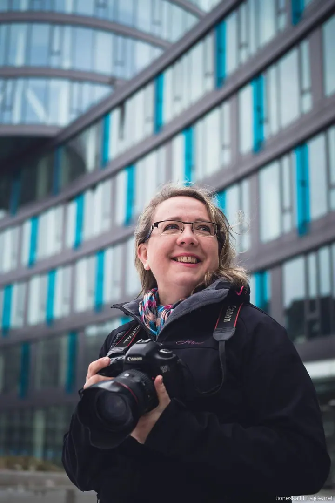
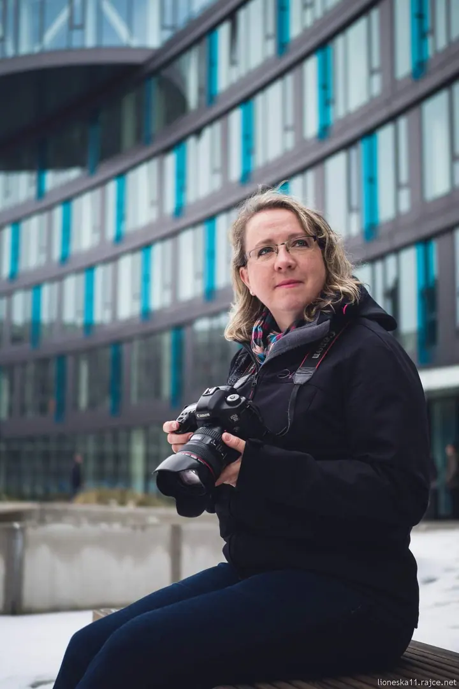

01 / 04
Portréty
Portréty venku, v ulicích města i v zeleni, s přirozeným světlem a jemně rozmazaným pozadím. Fotím na full frame a ráda zkouším různé objektivy.
Zeptat se na termín→

Fotím, tedy jsem
Zeptat se na termín →(01) Ahoj
Jmenuji se Gabi Uhrová a fotím pod značkou Lioneska photo. Nejvíc mě baví portréty , reportáže z akcí a zvířata, hlavně pejsci . Od roku 2017 fotím na volné noze.
(02) Co fotím
01 / 04
Portréty venku, v ulicích města i v zeleni, s přirozeným světlem a jemně rozmazaným pozadím. Fotím na full frame a ráda zkouším různé objektivy.
Zeptat se na termín→02 / 04
Reportáže mě baví ze všeho nejvíc. Fotím momentky z akcí tak, jak se opravdu odehrály, protože štěstí přeje připraveným.
Zeptat se na termín→03 / 04
Fotím pejsky k adopci pro spolek Dočasky De De, aby jim pěkné fotky pomohly rychleji najít stálý domov. Zvířata fotím ráda a s trpělivostí.
Zeptat se na termín→Dále nabízím
Moje fotky krajin, měst, zvířat a momentek najdete na Shutterstocku a Adobe Stocku. Pokud byste chtěli některou z nich využít komerčně, napište mi napřímo.
↗(04) Postup
Od první zprávy po hotovou galerii.
Krok 1 z 4
Ozvěte se e-mailem nebo telefonem a napište, co byste rádi nafotili, ať jde o portrét, akci, nebo vašeho pejska.
Krok 2 z 4
Společně vybereme termín, místo a celkovou představu, aby focení sedělo vám i světlu.
Krok 3 z 4
Fotím v klidu a bez stresu. Nejlepší fotky často vznikají mezi pózami, ve chvílích, kdy se přestanete hlídat.
Krok 4 z 4
Z focení pečlivě vyberu nejlepší snímky, upravím je a pošlu vám je v digitální podobě.
Štěstí přeje připraveným.
(05) Za objektivem
Jsem vášnivá fotografka s širokým záběrem. Ráda fotím při všech příležitostech: reportáže, zvířata, krajiny, města, momentky i street art. Dlouho jsem fotila kompaktem, v roce 2013 jsem si pořídila první zrcadlovku a začala se s ní učit.
Dnes fotím full framem Canon EOS 5D Mark III a několika objektivy, od širokáče přes makro až po můj nejoblíbenější 70-200mm. Od srpna 2017 jsem na volné noze. Mám ráda chvíle, kdy jsem připravená a vznikne netradiční, zajímavá fotka.
Fotím taky pejsky k adopci pro spolek Dočasky De De, kterým pěkné fotky pomáhají rychleji najít stálý domov. Své fotky nabízím i ve fotobankách Shutterstock a Adobe Stock. Jestli vás něco z mé práce zaujalo, napište mi. Díky a pěkné světlo!
Gabi
Gabi Uhrová · Fotografka portrétů, reportáží a zvířat
Ano. Pokud vás zaujala některá z mých fotek, napište mi na gabi@lioneska.cz a domluvíme se. Část fotek najdete také na Shutterstocku a Adobe Stocku.
Ráda. Pravidelně fotím pejsky k adopci pro spolek Dočasky De De a zvířata patří k tomu, co mě na focení baví nejvíc.
Fotím full framem Canon EOS 5D Mark III. Mám několik objektivů, od širokáče přes makro až po můj nejoblíbenější 70-200mm.
Termín předání vám řeknu předem podle rozsahu focení. Třídění a úpravám se věnuji pečlivě, aby výsledek stál za to.
(07) Kontakt
Napište pár vět o tom, co si představujete, a termín, který se vám hodí.
gabi@lioneska.cz